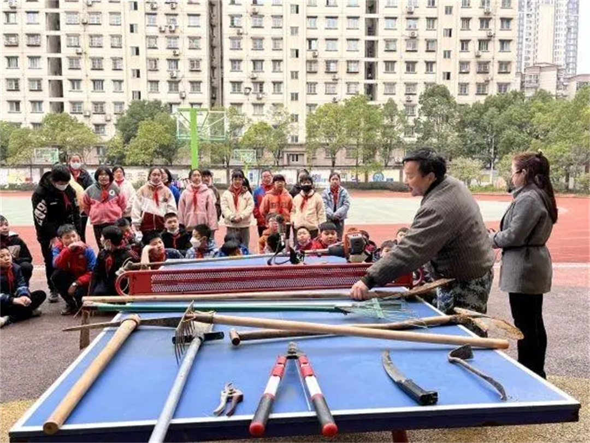

长江日报大武汉客户端2月22日讯（记者郭丽霞）坑铲、高枝剪、挖锄、镐、手锯……这些劳动工具是干什么的？如何使用？学会劳动，先从认识劳动工具开始。2月21日，青山区钢城第四小学邀请园林专家进入课堂，指导孩子们操作和使用基本劳动工具。
“这是坑铲，用来挖坑。”“这是高枝剪，设计巧妙，用来修剪高处的枝叶。”在这堂特殊的劳动课上，青山公园园林专家向孩子们介绍了十多种园林工作中所需的劳动工具，并指导他们如何使用这些工具。随后，同学们将课堂上学到的知识运用于实践之中，一起将4株新移植的红梅种植在校园里，艳红的花朵将校园点缀得春意盎然。
学生汪子凌说：“这堂课让我受益匪浅。原来，铁锹还分为圆锹和方锹，圆锹比方锹更容易铲出泥土；高枝剪的设计十分巧妙，修剪高高枝头上的枝叶，只需要拉扯绳子就能轻松搞定。今后我们会在劳动基地中更多地使用这些劳动工具。”
钢城第四小学副校长万琳介绍，这堂劳动课是学校“察颜阅色”社团开展的实践活动之一，旨在进一步培养学生劳动观念，提升他们的劳动技能。该校一直将劳动课与“察颜阅色”社团活动相融合，引导学生在观察自然的同时，用自己的劳动装扮大自然。学校还根据不同年段学生的特点，联系生活实际，设计相应的劳动课程，让孩子们享受劳动的乐趣。
青山区钢城第四小学的劳动课上，孩子们学习使用园林劳动工具。